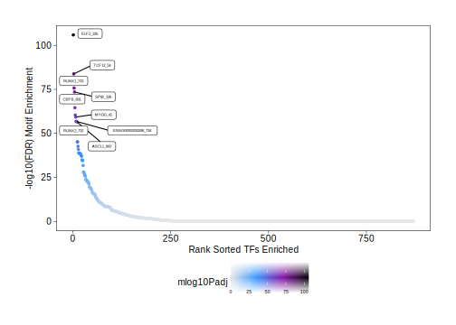

14.1 Motif Enrichment
Continuing our analysis of differential peaks from the previous chapter, we can look for motifs that are enriched in peaks that are up or down in various cell types. To do this, we must first add these motif annotations to our ArchRProject. This effectively creates a binary matrix where the presence of a motif in each peak is indicated numerically. We do this using the addMotifAnnotations() function which determines motif presence in the peak set stored in the ArchRProject. This function allows you to use motif sets that have been curated from repositories such as JASPAR or CIS-BP. For JASPAR, ArchR retrieves these motif sets using the TFBSTools::getMatrixSet() function. For CIS-BP, ArchR retrieves motifs using the chromVARmotifs package. Because of this, certain species may or may not be available for any given motif set and you should familiarize yourself with the addMotifAnnotations() function docs if you are using anything other than human or mouse. To provide maximal flexibility, we allow users to provide their own motif set as a PWMatrixList object to the motifPWMs parameter. If you need to construct your own PWMatrixList object, check out the universalmotif package which provides for simplified conversion between various motif file formats (e.g. meme) and the PWMatrixList format from the TFBSTools package.
projHeme5 <- addMotifAnnotations(ArchRProj = projHeme5, motifSet = "cisbp", name = "Motif")
## ArchR logging to : ArchRLogs/ArchR-addMotifAnnotations-1a170f75e2-Date-2025-01-23_Time-21-25-08.141252.log
## If there is an issue, please report to github with logFile!
## 2025-01-23 21:25:08.577197 : Getting Motif Set, Species : Homo sapiens, 0.007 mins elapsed.
## Using version 2 motifs!
## 2025-01-23 21:25:19.503005 : Finding Motif Positions with motifmatchr!, 0.189 mins elapsed.
## 2025-01-23 21:27:17.342835 : All Motifs Overlap at least 1 peak!, 2.153 mins elapsed.
## 2025-01-23 21:27:17.349028 : Creating Motif Overlap Matrix, 2.153 mins elapsed.
## 2025-01-23 21:27:19.050366 : Finished Getting Motif Info!, 2.181 mins elapsed.
## ArchR logging successful to : ArchRLogs/ArchR-addMotifAnnotations-1a170f75e2-Date-2025-01-23_Time-21-25-08.141252.logThe motifSet used should be chosen carefully because annotations may not be available for your species.
14.1.1 Which motifs are found in a given peak?
Before diving into how to perform various motif enrichment analyses, we’ll take a slight detour to discuss how to figure out which motifs are present in a given peak. Lets say we are interested in understanding which TF motifs are present within the promoter peak of the CEBPA gene, located at chr19:33792929-33794030. First, we extract the peak set from our ArchRProject and create names for each peak based on the chromosome, start, and end positions.
pSet <- getPeakSet(ArchRProj = projHeme5)
pSet$name <- paste(seqnames(pSet), start(pSet), end(pSet), sep = "_")Then, we extract a RangedSummarizedExperiment object containing the per-peak motif matches, create analogous names for that object, and then sort the matches object to ensure that the peaks are listed in the same order as the peaks from the peak set.
matches <- getMatches(ArchRProj = projHeme5, name = "Motif")
rownames(matches) <- paste(seqnames(matches), start(matches), end(matches), sep = "_")
matches <- matches[pSet$name]Now, we just need to find the index of the CEBPA promoter peak of interest and find which motifs are present in that peak. Note that the below code only works when a single peak is being analyzed.
First, we make a GRanges object corresponding to the CEBPA promoter.
Then we find peaks from our peak set that overlap this region.
Then we get the TFs that have motif matches in that peak.
colnames(matches)[which(assay(matches[queryHits,]))]
## [1] "TFAP2D_2" "HIF1A_24" "TCFL5_25" "HES1_34" "TCF15_46"
## [6] "ATOH8_71" "SCXB_93" "HES4_95" "SCXA_96" "ZFX_158"
## [11] "KLF6_165" "ZFY_166" "KLF5_175" "ZNF423_176" "CTCF_177"
## [16] "SP4_180" "KLF7_189" "PLAGL1_190" "EGR1_195" "EGR2_196"
## [21] "CTCFL_198" "SNAI1_199" "GLIS2_201" "KLF16_205" "EGR4_207"
## [26] "ZNF148_222" "SP8_226" "ZNF219_229" "ZNF143_231" "SP2_232"
## [31] "SP7_241" "SP3_247" "GLIS1_250" "ZBTB7A_258" "ZBTB7C_265"
## [36] "WT1_266" "SP1_267" "SP6_275" "SP5_279" "SP9_283"
## [41] "DNMT1_301" "ELF4_323" "SPDEF_330" "EHF_333" "MBD2_644"
## [46] "MECP2_645" "TBP_793" "EP300_804" "NRF1_805" "KLF2_846"
## [51] "ZFP161_850" "TFCP2L1_858" "SMAD5_866"The same type of workflow could be used in conjunction with peak-to-gene links or co-accessibility, which will come up in later chapters, to identify TF motifs present in other sets of peaks. The key is matching peaks based on the chromosome, start and end positions as shown above.
14.1.2 Motif Enrichment in Differential Peaks
We can then use the differential testing SummarizedExperiment object markerTest which was generated in the previous chapter to define the set of significantly differential peaks that we are interested in testing for motif enrichment. In this case, we are looking for peaks that have an FDR <= 0.1 and a Log2FC >= 0.5. In the context of the differential comparison made in markerTest, these represnt peaks that are more accessible in “Erythroid” cells than “Progenitor” cells. We can test these differentially accessible peaks for enrichment of various motifs using the peakAnnoEnrichment() function. This function is a generalizable function that can be used for many different enrichment tests as we will demonstrate throughout this chapter.
motifsUp <- peakAnnoEnrichment(
seMarker = markerTest,
ArchRProj = projHeme5,
peakAnnotation = "Motif",
cutOff = "FDR <= 0.1 & Log2FC >= 0.5"
)
## ArchR logging to : ArchRLogs/ArchR-peakAnnoEnrichment-1a12ba07ae-Date-2025-01-23_Time-21-27-29.724061.log
## If there is an issue, please report to github with logFile!
## 2025-01-23 21:27:35.076417 : Computing Enrichments 1 of 1, 0.089 mins elapsed.
## ArchR logging successful to : ArchRLogs/ArchR-peakAnnoEnrichment-1a12ba07ae-Date-2025-01-23_Time-21-27-29.724061.logThe output of peakAnnoEnrichment() is a SummarizedExperiment object containing multiple assays that store the results of enrichment testing with the hypergeometric test.
motifsUp
## class: SummarizedExperiment
## dim: 870 1
## metadata(0):
## assays(10): mlog10Padj mlog10p ... CompareFrequency feature
## rownames(870): TFAP2B_1 TFAP2D_2 ... TBX18_869 TBX22_870
## rowData names(0):
## colnames(1): Erythroid
## colData names(0):To prepare this data for plotting with ggplot we can create a simplified data.frame object containing the motif names, the corrected p-values, and the significance rank.
df <- data.frame(TF = rownames(motifsUp), mlog10Padj = assay(motifsUp)[,1])
df <- df[order(df$mlog10Padj, decreasing = TRUE),]
df$rank <- seq_len(nrow(df))As expected, the most enriched motifs in the peaks that are more accessible in “Erythroid” cells correspond to GATA transcription factors, consistent with the well-studied role of GATA1 in erythroid differentiation.
head(df)
## TF mlog10Padj rank
## 384 GATA3_384 632.8126 1
## 383 GATA1_383 624.3005 2
## 388 GATA2_388 607.9140 3
## 385 GATA5_385 482.6431 4
## 386 GATA4_386 378.5250 5
## 387 GATA6_387 267.0503 6Using ggplot we can plot the rank-sorted TF motifs and color them by the significance of their enrichment. Here we use ggrepel to label each TF motif.
ggUp <- ggplot(df, aes(rank, mlog10Padj, color = mlog10Padj)) +
geom_point(size = 1) +
ggrepel::geom_label_repel(
data = df[rev(seq_len(30)), ], aes(x = rank, y = mlog10Padj, label = TF),
size = 1.5,
nudge_x = 2,
color = "black"
) + theme_ArchR() +
ylab("-log10(P-adj) Motif Enrichment") +
xlab("Rank Sorted TFs Enriched") +
scale_color_gradientn(colors = paletteContinuous(set = "comet"))
ggUp
## Warning: ggrepel: 23 unlabeled data points (too many overlaps). Consider
## increasing max.overlapsWe can perform the same analyses for the peaks that are more accessible in the “Progenitor” cells by using peaks with Log2FC <= -0.5.
motifsDo <- peakAnnoEnrichment(
seMarker = markerTest,
ArchRProj = projHeme5,
peakAnnotation = "Motif",
cutOff = "FDR <= 0.1 & Log2FC <= -0.5"
)
## ArchR logging to : ArchRLogs/ArchR-peakAnnoEnrichment-1a17de7a927-Date-2025-01-23_Time-21-27-35.655721.log
## If there is an issue, please report to github with logFile!
## 2025-01-23 21:27:41.258316 : Computing Enrichments 1 of 1, 0.093 mins elapsed.
## ArchR logging successful to : ArchRLogs/ArchR-peakAnnoEnrichment-1a17de7a927-Date-2025-01-23_Time-21-27-35.655721.logmotifsDo
## class: SummarizedExperiment
## dim: 870 1
## metadata(0):
## assays(10): mlog10Padj mlog10p ... CompareFrequency feature
## rownames(870): TFAP2B_1 TFAP2D_2 ... TBX18_869 TBX22_870
## rowData names(0):
## colnames(1): Erythroid
## colData names(0):df <- data.frame(TF = rownames(motifsDo), mlog10Padj = assay(motifsDo)[,1])
df <- df[order(df$mlog10Padj, decreasing = TRUE),]
df$rank <- seq_len(nrow(df))In this case, the most enriched motifs in the peaks that are more accessible in “Progenitor” cells correspond to RUNX, ELF, and CBFB motifs.
head(df)
## TF mlog10Padj rank
## 326 ELF2_326 105.93186 1
## 56 TCF12_56 83.78656 2
## 733 RUNX1_733 75.74706 3
## 336 SPIB_336 73.51366 4
## 801 CBFB_801 64.57766 5
## 322 SPI1_322 60.43296 6ggDo <- ggplot(df, aes(rank, mlog10Padj, color = mlog10Padj)) +
geom_point(size = 1) +
ggrepel::geom_label_repel(
data = df[rev(seq_len(30)), ], aes(x = rank, y = mlog10Padj, label = TF),
size = 1.5,
nudge_x = 2,
color = "black"
) + theme_ArchR() +
ylab("-log10(FDR) Motif Enrichment") +
xlab("Rank Sorted TFs Enriched") +
scale_color_gradientn(colors = paletteContinuous(set = "comet"))
ggDo
## Warning: ggrepel: 21 unlabeled data points (too many overlaps). Consider
## increasing max.overlaps
To save an editable vectorized version of these plots, we use the plotPDF() function.
14.1.3 Motif Enrichment in Marker Peaks
Similar to the motif enrichment analyses performed on the differential peaks in the previous section, we can also perform motif enrichment on our marker peaks identified using getMarkerFeatures().
To do this, we pass our marker peak SummarizedExperiment (markerPeaks, created previously) to the peakAnnotationEnrichment() function.
enrichMotifs <- peakAnnoEnrichment(
seMarker = markerPeaks,
ArchRProj = projHeme5,
peakAnnotation = "Motif",
cutOff = "FDR <= 0.1 & Log2FC >= 0.5"
)
## ArchR logging to : ArchRLogs/ArchR-peakAnnoEnrichment-1a18a42d7f-Date-2025-01-23_Time-21-27-43.208471.log
## If there is an issue, please report to github with logFile!
## 2025-01-23 21:27:48.353849 : Computing Enrichments 1 of 11, 0.086 mins elapsed.
## 2025-01-23 21:27:48.4569 : Computing Enrichments 2 of 11, 0.087 mins elapsed.
## 2025-01-23 21:27:48.561073 : Computing Enrichments 3 of 11, 0.089 mins elapsed.
## 2025-01-23 21:27:48.670774 : Computing Enrichments 4 of 11, 0.091 mins elapsed.
## 2025-01-23 21:27:48.778218 : Computing Enrichments 5 of 11, 0.093 mins elapsed.
## 2025-01-23 21:27:48.883677 : Computing Enrichments 6 of 11, 0.095 mins elapsed.
## 2025-01-23 21:27:49.000506 : Computing Enrichments 7 of 11, 0.097 mins elapsed.
## 2025-01-23 21:27:49.133277 : Computing Enrichments 8 of 11, 0.099 mins elapsed.
## 2025-01-23 21:27:49.269016 : Computing Enrichments 9 of 11, 0.101 mins elapsed.
## 2025-01-23 21:27:49.405866 : Computing Enrichments 10 of 11, 0.103 mins elapsed.
## 2025-01-23 21:27:49.540011 : Computing Enrichments 11 of 11, 0.106 mins elapsed.
## ArchR logging successful to : ArchRLogs/ArchR-peakAnnoEnrichment-1a18a42d7f-Date-2025-01-23_Time-21-27-43.208471.logThe output of peakAnnoEnrichment() is a SummarizedExperiment object containing multiple assays that store the results of enrichment testing with the hypergeometric test.
enrichMotifs
## class: SummarizedExperiment
## dim: 870 11
## metadata(0):
## assays(10): mlog10Padj mlog10p ... CompareFrequency feature
## rownames(870): TFAP2B_1 TFAP2D_2 ... TBX18_869 TBX22_870
## rowData names(0):
## colnames(11): B CD4.M ... PreB Progenitor
## colData names(0):We can directly plot these motif enrichments across all cell groups using the plotEnrichHeatmap() function. In this function, we limit the total number of motifs shown per cell group using the n parameter.
heatmapEM <- plotEnrichHeatmap(enrichMotifs, n = 7, transpose = TRUE)
## ArchR logging to : ArchRLogs/ArchR-plotEnrichHeatmap-1a16616c89b-Date-2025-01-23_Time-21-27-49.851784.log
## If there is an issue, please report to github with logFile!
## Adding Annotations..
## Preparing Main Heatmap..
## 'magick' package is suggested to install to give better rasterization.
##
## Set `ht_opt$message = FALSE` to turn off this message.We can diplay this plot using ComplexHeatmap::draw().

To save an editable vectorized version of this plot, we use the plotPDF() function.
14.1.4 Motif enrichment in arbitrary regions
It is also possible to perform the same motif enrichment analyses using the hypergeometric test in an arbitrary user-defined set of regions. To do this, we would use the customEnrichment() function. The most important things to note about this custom enrichment is that the user-defined set of regions must overlap with the peakset of the project and a peakAnnotation matches object must already have been added to the ArchRProject via addMotifAnnotations(), addArchRAnnotations(), or addPeakAnnotations().
14.1.5 Plotting motif logos
Because different motif annotations will use different position weight matrices (PWMs), it’s often useful to plot the sequence logo of the exact motif being used. Multiple tools exist to do this but the one we prefer is ggseqlogo
To do this, we must first extract the relevant motif information as a PWMatrix object.
pwm <- getPeakAnnotation(projHeme5, "Motif")$motifs[["SOX6_868"]]
pwm
## An object of class PWMatrix
## ID: ENSG00000110693_LINE19574_SOX6_I_N7
## Name: SOX6
## Matrix Class: Unknown
## strand: *
## Pseudocounts:
## Tags:
## $ensembl
## [1] "ENSG00000110693"
##
## Background:
## A C G T
## 0.25 0.25 0.25 0.25
## Matrix:
## [,1] [,2] [,3] [,4] [,5] [,6] [,7]
## A 0.2856363 1.236986 1.297203 -2.131381 1.340070 1.259222 -1.224160
## C -0.6196693 -2.173286 -3.473518 1.257839 -3.473518 -1.259465 -1.366327
## G -0.4525775 -1.628926 -1.447733 -1.817039 -2.592395 -1.817039 -3.473518
## T 0.4023151 -1.407137 -2.592395 -1.604399 -2.592395 -3.473518 1.229625
## [,8]
## A 0.4500618
## C -0.4283456
## G 0.2154626
## T -0.6169845Then, we convert that object to a position probability matrix. We do this with a function, which could be used in an lapply statement if you wanted to do this for many PWMatrix objects or a PWMatrixList.
PWMatrixToProbMatrix <- function(x){
if (class(x) != "PWMatrix") stop("x must be a TFBSTools::PWMatrix object")
m <- (exp(as(x, "matrix"))) * TFBSTools::bg(x)/sum(TFBSTools::bg(x))
m <- t(t(m)/colSums(m))
m
}
ppm <- PWMatrixToProbMatrix(pwm)
ppm
## [,1] [,2] [,3] [,4] [,5] [,6]
## A 0.3326521 0.86130341 0.914762277 0.02966834 0.954827787 0.880670100
## C 0.1345306 0.02845076 0.007751938 0.87945252 0.007751938 0.070951425
## G 0.1589967 0.04903503 0.058775647 0.04062654 0.018710138 0.040626537
## T 0.3738206 0.06121080 0.018710138 0.05025260 0.018710138 0.007751938
## [,7] [,8]
## A 0.073501136 0.3921023
## C 0.063760514 0.1628965
## G 0.007751938 0.3101089
## T 0.854986412 0.1348923This Position Probability Matrix (PPM), has column sums that add to 1.
We can then pass this PPM to the ggseqlogo() function for plotting. We can plot as a PWM using method = "bits". Note that you need to have the ggseqlogo package installed for this to work.
Or we can plot as a PPM using method = "prob".